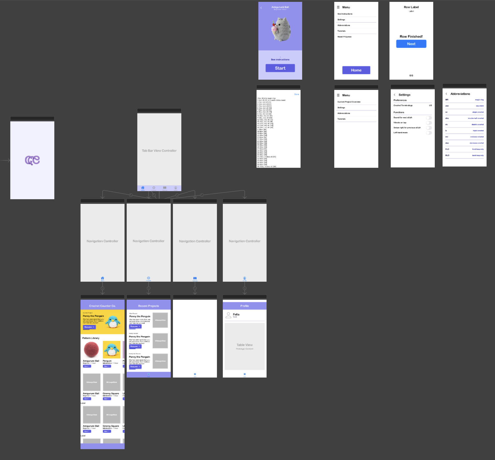

Crochet Counter: App Overview and Development Process
Introduction
The app is called “Crochet Counter” because its primary purpose is to assist people who crochet by helping them keep track of the stitches and rows. Essentially, crocheting is the process of converting different types of stitches, which act as building blocks, to eventually create a finished product, such as a stuffed penguin plush or a coaster. To reach that final stage, there is the concept of rows, which allows for the yarn to build from a one-dimensional line into 2D and even 3D. The app will help the user keep track of what their current stitch and row is, select which pattern to use, and allows for any pattern to be imported in. My sister helped with the UI/UX by using Figma and I did the code and implementation into iOS.
Features
Home Screen
The home screen is where you can select which project to do. At the top, there is a quick and easy way to resume the last project that was selected. However, you can jump between projects and the app will save your progress for each one.
Crochet Screen
The core functions of the app are knowing what to do for the current stitch and advancing to the next one as well as showing the progress on the current row. The implementation took a user-friendly approach by tapping to go to the next stitch, swiping left to go back a stitch, and swiping right to skip to the next row. You can see these in action below:
Forward
Backward
Skip Row
Code Overview
Part 1: Creating Own Stitch Format using Python
Typically, crochet patterns have a certain standard consisting of abbreviations for the type of stitch and repeating loops to signify how to do each row in a human readable fashion. For example, this is what a pattern for a plush ball is:
1 6sc [6] # in magic circle
2 (inc) x 6 [12]
3 (sc, inc) x 6 [18]
4 sc, inc, (2sc, inc) x 5, sc [24]
5 (3sc, inc) x 6 [30]
6 30sc [30] # in all sts
7 30sc [30] # in all sts
8 2sc, inc, (4sc, inc) x 5, 2sc [36]
9 36sc [36] # in all sts
10 36sc [36] # in all sts
11 36sc [36] # in all sts
12 2sc, dec, (4sc, dec) x 5, 2sc [30]
13 30sc [30] # in all sts
14 30sc [30] # in all sts
15 (3sc, dec) x 6 [24]
16 sc, dec, (2sc, dec) x 5, sc [18]
17 (sc, dec) x 6 [12]
# Fasten off, stuff fully, close hole, and weave tails in.
To help you understand the notation, the first row is “6sc”, where 6 means you do 6 “sc”s, and sc is short for single crochet, a type of stitch. The third row says “(sc, inc) x 6”, which means you do an “sc” followed by an “inc” 6 times over. To make it easy to import this data into the app, I used Python and used RegEx to parse through the data.
There are three cases for instructions. There is “Basic”, which is a singular instruction done once, which is any instruction that is just the abbreviation with no number in front (i.e. “sc”, “inc”, “dec”). Another is “Numbered”, which is any stitch with a number preceding it (i.e. “4sc”, “30sc”, “2inc”) . Lastly, there is “Repetition”, where a set of stitches, consisting of “Basic” and/or “Numbered” stitches wrapped in parentheses, are repeated a certain number of times (i.e. “(2sc, inc) x 5”). Some other ones are the total number of stitches per row, denoted with brackets, and comments, denoted with a “#” sign. To find out what type of instruction it is, I used a series of RegEx sequences to figure out which was what.
num_instruction = r'\d+[A-Za-z_]+'
instruction = r'[A-Za-z_]+'
parentheses = r'\([^)]*\)\s*x\s*\d+'
brackets = r'\[\d+\]'
comments = r'#'
Looping through each line of the instructions, I would call the translate function, which will use the RegEx functions to find which instruction it is currently reading. After distinguishing the current instruction, it will parse it and give it an ID, which denotes what type of instruction it is. Here is what the code looks like.
def translate(result, line, to_convert):
index = 0
rownum = r'\d+\s+'
match = re.search(rownum, line)
if match:
index = match.end()
subqueue = []
# look for first instruction: either parentheses or optional integer + instruction
while(True):
patterns = [num_instruction, instruction, parentheses, brackets, comments]
matches = []
for pattern in patterns:
match = re.search(pattern, line[index:])
if match:
matches.append((match.start(), match.group(), match.end()))
if matches:
best_match = min(matches, key=lambda x: x[0])
if str(best_match[1]) == '#': # comment
subqueue.append([line[index + best_match[0]:], 5, 0, 0])
break
else:
if str(best_match[1])[0] == '[': # counter
subqueue.append([best_match[1], 4, 0, 0])
index += best_match[2]
elif str(best_match[1])[0] == '(': # repetition
digits_end = r'\d+$' #look for digits at end and append to the instruction
match = re.search(digits_end, best_match[1])
if match:
digits = match.group()
subqueue.append([best_match[1], 3, int(digits), 0])
index += best_match[2]
else:
print("error extracting digits repetition")
elif any(char.isdigit() for char in best_match[1]): # numbered
digits_front = r'^\d+'
match = re.search(digits_front, best_match[1])
if match:
digits = match.group()
subqueue.append([best_match[1], 2, int(digits), 0])
index += best_match[2]
else:
print("error extracting digits numbered")
else: # basic
subqueue.append([best_match[1], 1, 1, 0])
index += best_match[2]
else:
break
if to_convert:
convert(result, subqueue)
else:
return subqueue
From there, it calls the convert function, which will add the correct number and type of instructions to the final list, which will eventually be appended into a text file that can be imported into the app. I am still proud of my ingenuity of recursively calling convert when it is parsing items in a repetition block.
def convert(result, subqueue):
for x in subqueue:
# basic
if x[1] == 1:
result.append(x[0])
# numbered
elif x[1] == 2:
pattern = "\d*(\w+)"
match = re.search(pattern, x[0])
if match:
for i in range(x[2]):
result.append(str(match.group(1)))
else:
print("error parsing instructions")
# repetition
elif x[1] == 3:
# extract out the little instructions
pattern = "x\s*(\d+)"
match = re.search(pattern, x[0])
if match:
start = x[0].find("(")
end = x[0].find(")")
for i in range(int(match.group(1))):
convert(result, translate(result, x[0][int(x[0].find('('))+1: int(x[0].find(')'))], False))
Part 2: The Frontend of the App
Here is the storyboard UI of the app's screen.
Even though it is a relatively simple app, there were still a lot of logistical hurdles in terms of which screen to present and how to transition between states, all while keeping the app looking modern and user-friendly. The animations shown earlier are coded using CG elements such as the CGRect, and using the animation library of UIView.animate().
During the process of making the frontend, I noticed a lot of similarities when dealing with HTML and CSS in web development. Similar to the meme of how hard it is to center a div in CSS, I found myself struggling with making sure each element had its proper anchor, didn’t resize randomly, and worked as expected.
Here are some snapshots of various scenes of the app.
Home
Recent
Start Screen
Crochet Screen
Row Finished
Menu
Settings
Part 3: The Backend of the App
The main part of the backend is to feed the current stitch, next stitch, and current row info to the crochet screen, so the user can simply follow what’s presented on the screen. To accomplish this, I created a class called StitchManager, which has a function to control the current stitch and row to go forwards, backwards, or to skip. There are also many getter and setter methods to make sure the StitchManager is correctly displaying the current project’s stitches.
// return true if new row
// false otherwise
func pressedView() -> Bool{
// check if its the end of the row
// if it is, increase row, call Row Finished! screen
if(currentStitchNumber + 1 > totalStitchNumber) {
if(currentRowNumber + 1 == getTotalRows()){
goNextSection()
}
else{
goNextRow()
}
return true
}
else{
// if no next
currentStitchNumber = currentStitchNumber + 1
setStitches()
return false
}
}
func goNextRow() {
currentStitchNumber = 1
currentRowNumber = currentRowNumber + 1
totalStitchNumber = (stitches[currentSectionNumber][currentRowNumber].count) - 1
setStitches()
}
func goNextSection() {
currentSectionNumber += 1
self.sectionprogress?[self.id] = currentSectionNumber
UserDefaults.standard.set(self.sectionprogress, forKey: "section_progress")
if currentSectionNumber > totalSections {
// TODO: go to completed screen
}
else {
currentSectionName = sections[currentSectionNumber]
print("current section name is \(currentSectionName)")
currentRowNumber = 0
currentStitchNumber = 1
setStitches()
}
}
func decreaseStitch() {
if currentStitchNumber > 0 {
currentStitchNumber = currentStitchNumber - 1
setStitches()
}
}
func setStitches(){
// if no next
if(currentSectionNumber == totalSections)
{
}
else if(currentStitchNumber + 1 > totalStitchNumber) {
currentStitch = stitches[currentSectionNumber][currentRowNumber][currentStitchNumber]
nextStitch = ""
}
// if not, increase by one, adjust current stitch
else {
currentStitch = stitches[currentSectionNumber][currentRowNumber][currentStitchNumber]
nextStitch = stitches[currentSectionNumber][currentRowNumber][currentStitchNumber+1]
}
}
Conclusion
As my first iOS app, or any mobile app in general, I am proud of what I was able to accomplish. There are many places to improve, such as trying to incorporate the MVC model to make the code more readable, and becoming more familiar with the storyboard on Xcode so I can streamline the app development process. I learned valuable skills like how to work with someone else and collaborate on the UI/UX as well as the fundamentals of app development.